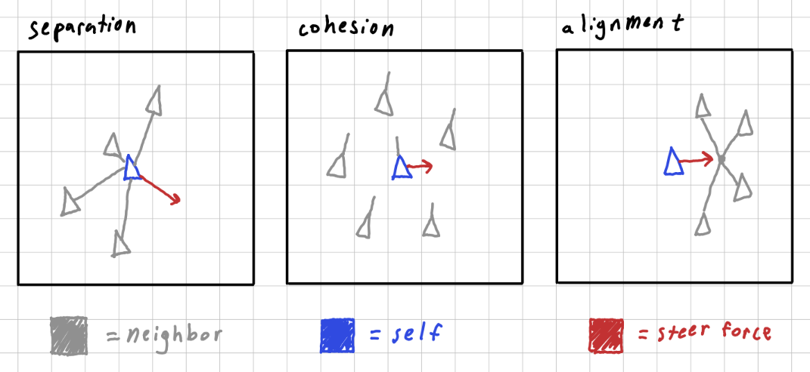
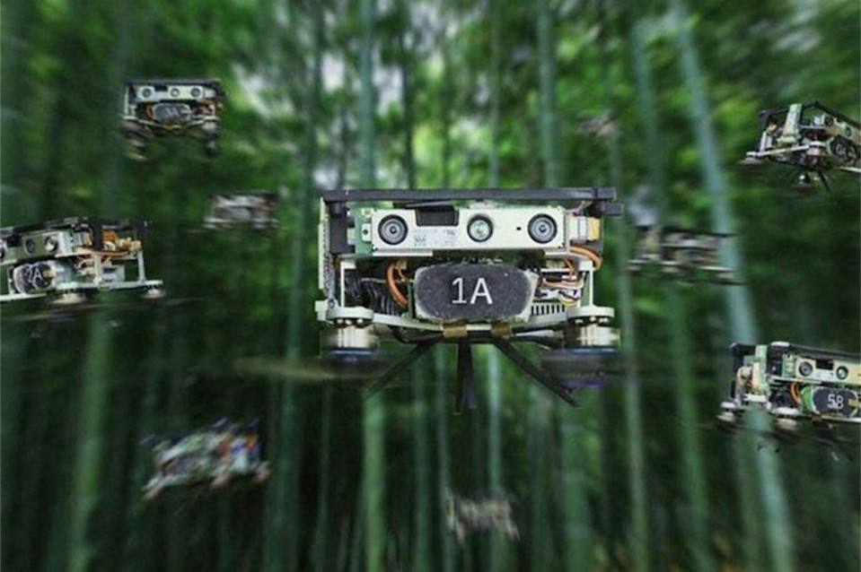

This project seeks to simulate and model the flocking behavior of bird-like creatures.
Coined by Craig Reynolds in his famous 1987 computer graphics paper entitled Flocks, Herds, and Schools: A Distributed Behavioral Model, a boid(or bird-oid) is an autonomous creature(or facsimile of one) represented using mathematics. The motions and manner in which flocks of birds, herds of mammals, and schools of fish move about can be closely mimicked with three simple rules. Rules from which natural and organic actions arise.

As my sketch shows, the rules are:
• Separation: an individual will steer away to avoid crowding local flockmates.
• Cohesion: an individual will steer such that they face parallel with the rest of the group.
• Alignment: an individual will steer toward the center of the group to stay together.
This system could be quite useful for analyzing crowd behavior, such as a simple model to suggest how people move throughout highways or train stations, to estimate delays and arrivals. It is most notably used in computer graphics for things like the animals you see swarming in video games or the birds you see in movies generated with CGI.
There is also an idea of swarm intelligence, or a hive mind, where in a drone warfare scenario, you have some target, and you also have a load of cheap drones with crude devices on them. You could set the position of some virtual boid at the center, where you want things to follow, and the spray and prey aspect of the system takes care of all inconsistencies or errors that arise in the software to hardware integration step. I’ve also seen a video of a drone swarm moving throughout a forest wherein each entity has attached laser range sensors, so as to scan and map the environment. If I remember correctly they used this and found some ancient jungle temple ruins. This idea I am more morally gung ho about.
